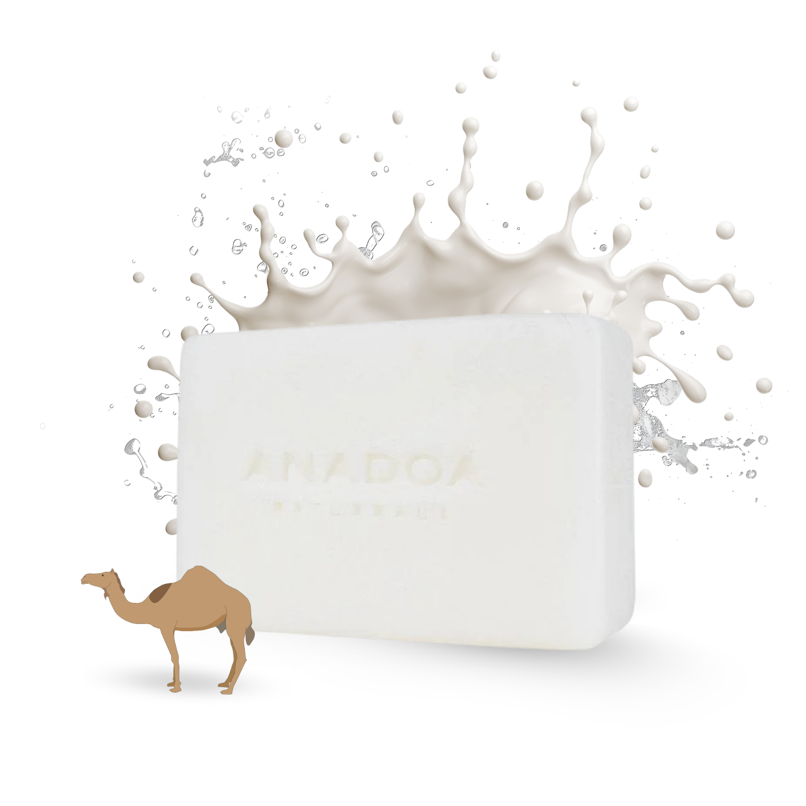
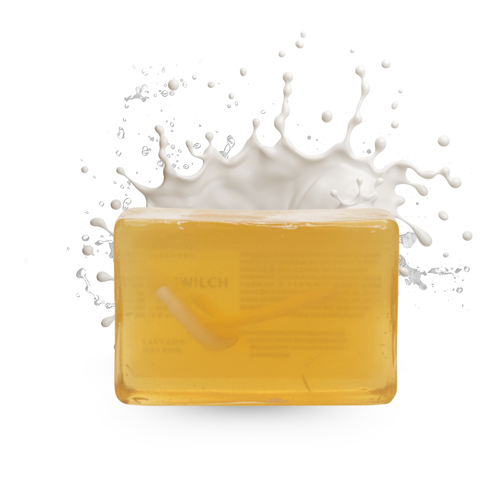
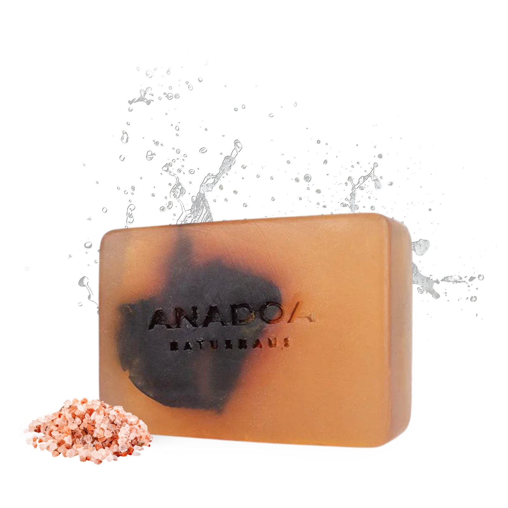
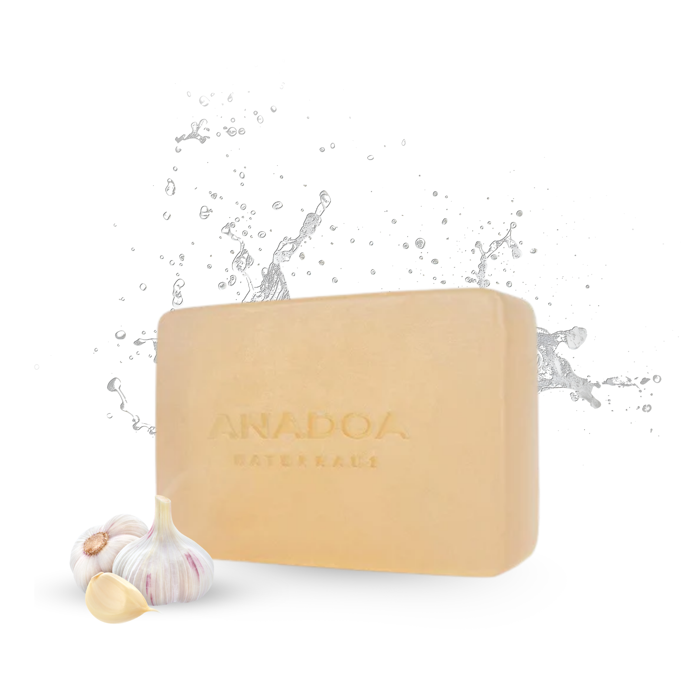
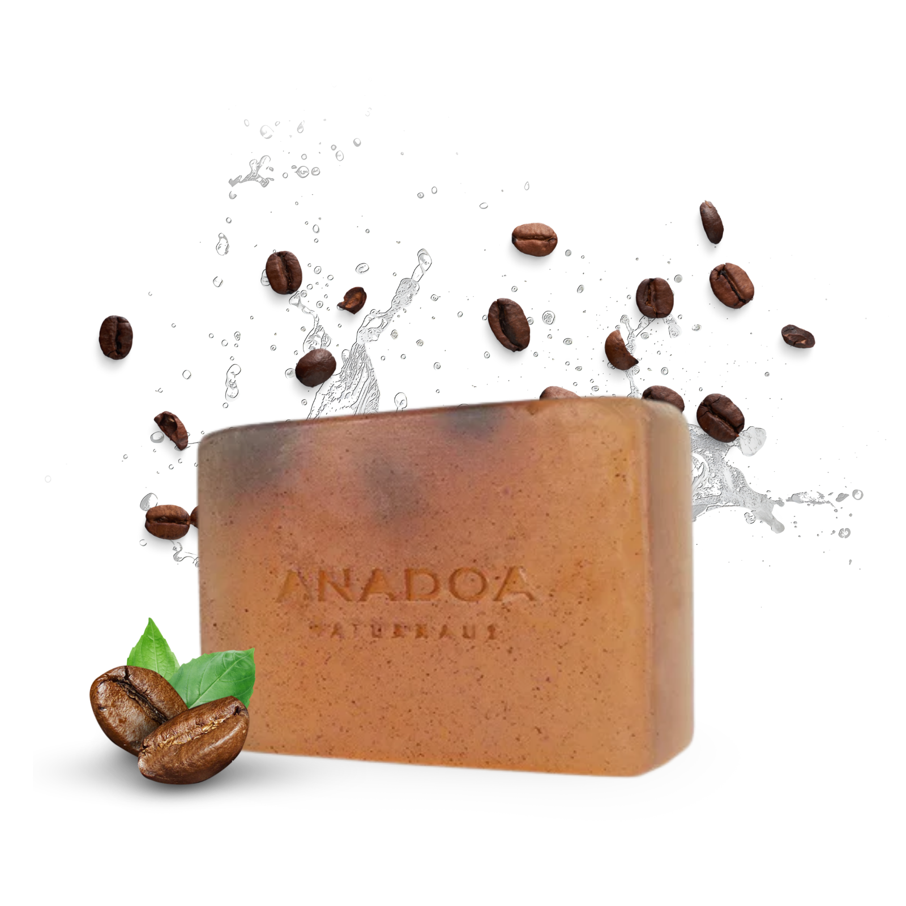
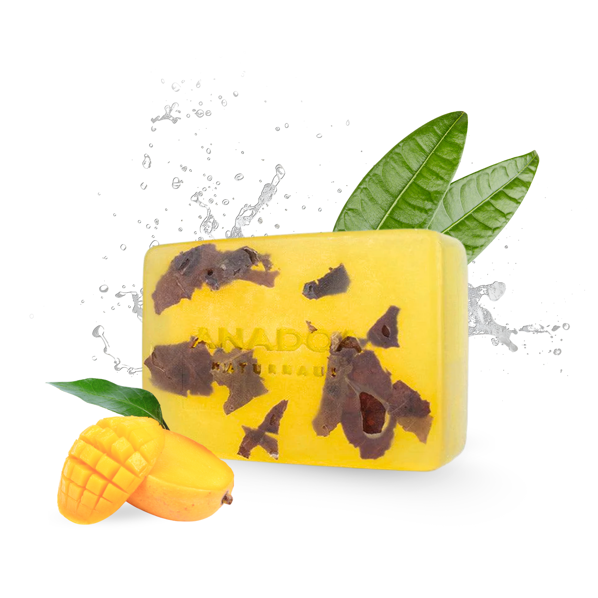

Individuelle Lösungen für jedes Hautbedürfnis
Jede Haut hat ihre ganz eigene Geschichte, ihre eigenen Empfindlichkeiten und Bedürfnisse. Wir bei Anadoa Naturhaus wissen, dass standardisierte, chemische Pflege oft nicht ausreicht oder die Haut sogar zusätzlich stresst. Normale Duschgele und Industrieseifen sind häufig stark basisch, entziehen der Haut ihre natürlichen Fette und zerstören den schützenden Säureschutzmantel.
Deshalb haben wir eine exklusive Palette an hochspezialisierten, pH-neutralen Naturseifen kreiert. Diese traditionell von Hand gefertigten Seifen basieren auf reinem, pflanzlichem Glycerin und erstklassigen Kaltpressölen. Sie respektieren die natürliche Balance Ihres Körpers und setzen mit ihren spezifischen Kräuter- und Pflanzenextrakten genau dort an, wo Ihre Haut Unterstützung braucht. Völlig frei von Parabenen, Sulfaten und Mikroplastik.
Klarheit & Balance: Hilfe bei unreiner und fettiger Haut
Neigt Ihre Haut zu Unreinheiten, Pickeln, Mitessern oder stark glänzenden Stellen in der T-Zone? Dann benötigt Ihre Haut eine klärende, antibakterielle Reinigung, die sie nicht gleichzeitig austrocknet.
-
Unsere Teebaumöl-Seife und die Grüne Tonerde Seife sind die perfekten Partner, um den Teint tiefenwirksam zu klären. Während die Tonerde überschüssigen Talg (Sebum) wie ein Magnet aus den Poren absorbiert, nutzt das Teebaumöl seine starke antibakterielle Kraft, um Entzündungen direkt an der Wurzel vorzubeugen.
-
Ein besonderes Juwel unserer anatolischen Sammlung ist die traditionelle Wacholderteer-Seife (Ardıç Katranı). Sie wird seit Generationen für ihre antiseptische Wirkung bei besonders problematischer Haut und hartnäckigen Unreinheiten geschätzt.
Nahrung & Feuchtigkeit: Oasen für trockene und reife Haut
Fühlt sich Ihre Haut nach dem Duschen oft gespannt an, juckt oder neigt sie zu feinen Trockenheitsfältchen? Dann fehlt es ihr massiv an Lipiden und langanhaltender Feuchtigkeit. Hier wirken reichhaltige Pflanzenöle wahre Wunder.
Die Arganseife, angereichert mit dem "flüssigen Gold Marokkos", und die sanfte Mandelölseife wurden speziell formuliert, um den Durst der Haut zu stillen. Diese Seifen sind prall gefüllt mit Vitamin E und essenziellen Omega-Fettsäuren. Sie legen einen schützenden, feuchtigkeitsbewahrenden Film auf die Hautbarriere. So wird die Spannkraft (Elastizität) spürbar verbessert und selbst stark beanspruchte Haut fühlt sich nach der Reinigung streichelzart an.
Sanfte Umarmung: Für extrem sensible Haut & Neurodermitis
Reagiert Ihre Haut schnell mit Rötungen, Juckreiz oder leiden Sie unter Ekzemen und Neurodermitis? Dann ist weniger oft mehr. In solchen Fällen empfehlen wir die pure Milde unserer Kamillenseife. Kamillenextrakt ist weltweit für seine herausragenden hautberuhigenden, entzündungshemmenden Eigenschaften bekannt. In unserer hypoallergenen, pH-neutralen Formulierung reinigt diese Seife so schonend, dass der natürliche Schutzmantel unangetastet bleibt, wodurch der Juckreiz gelindert und die Haut in eine wohltuende Ruhe versetzt wird.
Entdecken Sie unsere Naturseifen

Reishi Seife
pH-neutrale Naturseife

Kamelmilch Seife
pH-neutrale Naturseife

Ziegenmilch Seife
pH-neutrale Naturseife

Rosmarin Seife
pH-neutrale Naturseife

Gelbe Tonerde & Zitrone
pH-neutrale Naturseife

Platanen Seife
pH-neutrale Naturseife

Knoblauch Seife
pH-neutrale Naturseife

Wabenhonig Seife
pH-neutrale Naturseife

Granatapfel Seife
pH-neutrale Naturseife

Kaffee Seife
pH-neutrale Naturseife

Grüne Tonerde & Teebaum Seife
pH-neutrale Naturseife

Kamillen Seife
pH-neutrale Naturseife

Mango Seife
pH-neutrale Naturseife
Entdecken Sie unsere große Auswahl an handgemachten Naturseifen. Unsere Seifen werden sorgfältig aus hochwertigen Pflanzenölen und natürlichen Extrakten hergestellt. Sie sind pH-neutral und bewahren den natürlichen Säureschutzmantel der Haut, während sie intensiv Feuchtigkeit spenden und reinigen. Egal ob trockene, fettige oder sensible Haut – hier finden Sie die perfekte natürliche Pflege für Ihre tägliche Routine.
Häufig gestellte Fragen (FAQ) zu Naturseifen
Warum sollte ich eine pH-neutrale Naturseife verwenden?
Eine pH-neutrale Naturseife (pH-Wert um 5,5) schützt den natürlichen Säureschutzmantel Ihrer Haut. Im Gegensatz zu basischen Industrieseifen trocknet sie die Haut nicht aus, verhindert Irritationen und hält die Barriere intakt gegen Bakterien.
Welche Naturseife hilft bei Akne und unreiner Haut?
Bei unreiner Haut und Akne empfehlen wir besonders unsere Teebaumöl-Seife oder die Grüne Tonerde Seife. Diese Inhaltsstoffe wirken natürlich antibakteriell, absorbieren überschüssigen Talg tiefenwirksam und klären den Teint sanft.
Gibt es spezielle Naturseifen für sehr trockene Haut?
Ja. Für trockene oder reife Haut sind extrem rückfettende Seifen wie unsere Arganseife oder Mandelölseife ideal. Sie sind reich an Vitamin E und essenziellen Fettsäuren, die die Haut schon während der Reinigung intensiv mit Feuchtigkeit versorgen.
Können Naturseifen auch bei Neurodermitis verwendet werden?
Naturseifen aus reinen Pflanzenölen ohne synthetische Duftstoffe oder aggressive Tenside (wie unsere Kamillenseife) sind besonders mild. Sie lindern Juckreiz und beruhigen gestresste Haut, was sie zu einer guten Wahl bei Neurodermitis oder Ekzemen macht.
Sind die Anadoa Naturseifen vegan und tierversuchsfrei?
Bis auf wenige Ausnahmen (wie Ziegen- oder Eselsmilchseifen) sind unsere Naturseifen zu 100% vegan. Alle Seifen bestehen aus kaltgepressten Pflanzenölen, sind palmölfrei und selbstverständlich absolut tierversuchsfrei hergestellt.